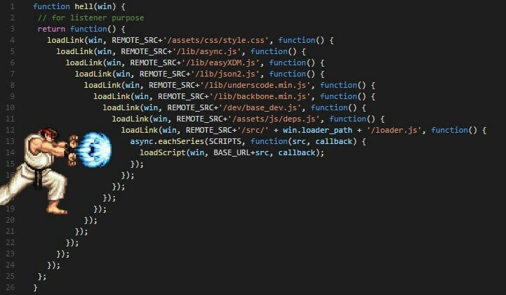

BACK
Callback
JS
function callFirst(text,callback){ window.setTimeout ( ()=>{ console.log('First') console.log(text) callback() }, 1000); } function callThird(){ console.log('Third') } callFirst('Second',callThird)
content
run
callback是指在一個函式內呼叫其他函式，像此時我們將【callThird】當成參數傳遞給【callFirst】，在【callFirst】內呼叫了【callThird】使結果按照順序呈現
這就是最原始解決Asynchronize問題的方法，利用傳入function來取得資料
console
Callback Hell
JS
function callFirst(callback){ window.setTimeout ( ()=>{ console.log('First') callback( callThird() ) }, 1000); } function callSecond(){ console.log('Second') } function callThird(){ console.log('Third') } callFirst(callSecond)
content
run
假如連 Second 也用函式的方式呈現呢？就會變成這個奇怪的樣子
而現在的程式這麼短已經很奇怪了，如果程式有很多不就非常恐怖，所以callback用太多會產生 Callback Hell 就會變成下方圖片的樣子
為了解決這個大問題就衍伸了 Promise ，那 Promise 到底是甚麼呢？他又給我們帶來甚麼好處？我們下個章節再來討論吧
console
